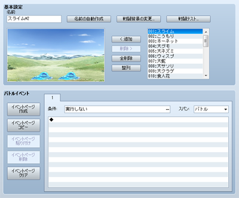

数据的用途
敌群数据是设定游戏中出现的敌人集团。在地图上移动时遇敌，或者事件指令战斗处理的敌人都是通过该数据来指定的。即使只和一个敌人战斗，也需要准备一个“只有一个敌人的敌群”。“战斗事件”（战斗中的事件处理）也是在敌群中分别设置的。
设定项目的内容

- ●名称
敌群的名称。该设定只在编辑器内部使用（不影响游戏的内容）。点击[自动命名]按钮后，会根据敌群中的敌人自动生成名称。
- ●更改战斗背景图
更改配置预览里显示的战斗背景。打开的窗口中，在左边栏指定远景，在右边栏指定地面使用的图片。该设定只在编辑器内部使用（不影响游戏的内容），并且和其他敌群数据共用。
- ●战斗测试
执行敌群的战斗测试。在打开的窗口上[1]~[4]的标签里，分别指定参加战斗的角色、装备、等级。（[状态]栏会根据设定的内容显示能力值）点击[确定]后，就会打开窗口开始战斗了。关闭窗口后战斗测试结束。
- ●配置预览
敌群中包含的敌人。一个敌群最多包含8个（包括同类）的敌人。
拖拽配置预览上的敌人可以改变敌人的位置。（通常以8像素为单位，按住[Alt]键拖拽时以2像素为单位）。右击选中[中途出现]时，该敌人在战斗事件中执行事件指令[敌人出现]后才会出现。
敌群的内容可以使用下面的按钮进行编辑。
- 添加
将右侧敌人列表中点击选中的敌人加入配置预览。双击敌人列表上的敌人也可以将其加入敌群。敌人添加的顺序在战斗中会反映在敌人选择列表的顺序上。
- 移除
移除配置预览上点击选中的敌人。
- 全部移除
将配置预览上的敌人全部移除。
- 自动排列
将配置预览上敌人的位置按照添加顺序从左往右排列。
[战斗事件]中，可以设定队伍和敌群战斗中执行事件的条件和内容。和地图事件一样，可以利用事件页的出现条件来对事件的内容“分情况处理”。
- ●事件页的操作
左侧的按钮[新建事件页][复制事件页][粘贴事件页][删除事件页][清空事件页]可以用来操作事件页，功能与地图事件相同。
- ●条件
-

执行事件页的条件。按下[…]按钮打开[条件]窗口，从以下5种条件中选择启用，并分别设定判定基准。战斗事件和地图事件不同，没有指定任何条件的事件页不会被执行。同时，有多个事件页同时满足条件时，ID最小的事件页会执行。
- 回合结束时
回合结束时会满足条件。
- 回合数
以经过的回合数为条件。左边栏为从战斗开始经过的回合数，右边栏为周期数。
- 敌人
以敌人的HP低于基准值作为条件。指定敌人对象和基准值（体力值相对与体力上限的比率）。
- 角色
以角色的HP低于基准值作为条件。指定角色对象和基准值（体力值相对与体力上限的比率）。
- 开关
以指定的开关打开作为条件。
- ●间隔
指定事件页要执行时，开始处理执行内容的时机。
- 战斗
战斗开始后第一次满足条件时开始处理。执行一次之后这场战斗中不会再次执行。
- 回合
每回合判定一次条件，满足条件的话就开始处理。
- 即时
一旦条件满足就会反复执行。请注意，如果不用开关之类的控制事件处理的话，有可能导致战斗无法进行。
- ●执行内容
满足[条件]和[间隔]时，通过事件指令来设定要执行的内容。编辑方法和地图事件的[执行内容]相同。